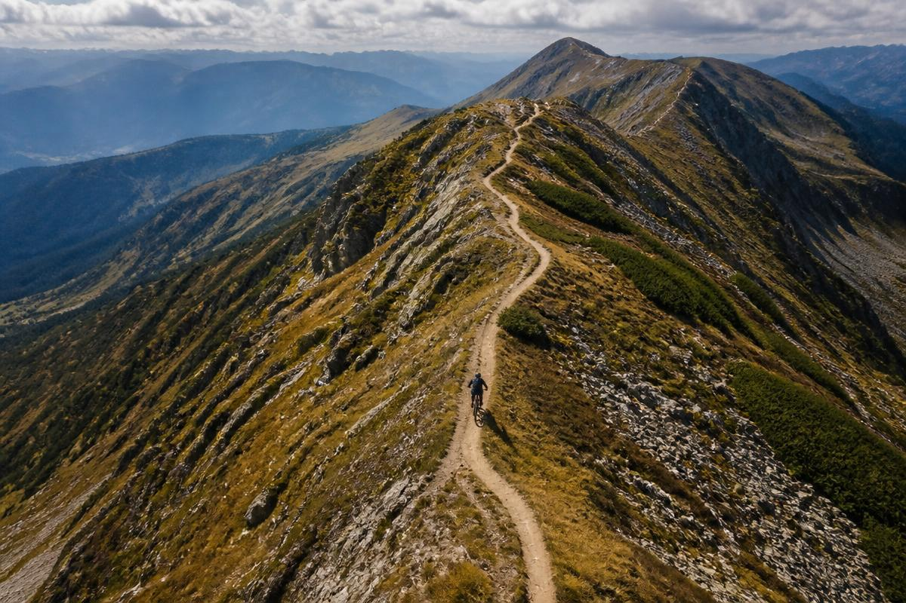

Au mai rămas
Despre Gugulan MTB
Gugulan MTB este mai mult decât o competiție sportivă — este o experiență în inima Banatului Montan, un eveniment care adună an de an sute de iubitori de mișcare, natură și aventură.
Organizată de Asociația Gugulanii Sportivi, competiția a ajuns în 2025 la ediția a VII-a, consolidându-și reputația drept unul dintre cele mai îndrăgite evenimente de mountain bike și trail running din vestul țării.
De la an la an, am crescut împreună cu o comunitate extraordinară de cicliști și voluntari care cred în sport, fair-play și bucuria de a descoperi trasee noi.
Gugulan MTB
Trasee spectaculoase, urcări solicitante și coborâri pline de adrenalină — asta te așteaptă la GUGULAN MTB! Fie că ești un rider experimentat sau la prima participare, energia traseului și vibe-ul comunității te vor motiva să dai tot ce ai mai bun. Pregătește-ți bicicleta și hai alături de noi pentru o aventură de neuitat!
- • 12 Septembrie 2026, ora 09:00
- • Traseu Scurt 19km • Traseu Mediu 30km
- • Traseu Lung 60km (2 x 30km) • eBike 30km
- * Copiii sub 18 ani nu plătesc taxa de participare.
- * Femeile nu plătesc taxa de participare.
Este mai mult decât o competiție. Este o comunitate. Aici se adună pasionații de mountain bike din toată țara, alături de familii, prieteni și voluntari care fac evenimentul posibil.
Te așteptăm să faci parte din povestea noastră!
Alege-ți traseul
Traseu Scurt
Ideal pentru începători și pentru cei care vor să guste atmosfera cursei fără un efort extrem.
- • 19 km
- • Punct de alimentare
- • Accesibil începătorilor
Traseu Mediu
Distanța echilibrată: suficient de tehnică pentru a fi provocatoare, suficient de scurtă pentru a fi distractivă.
- • 30 km
- • 2 puncte de alimentare
- • Mix drum forestier și singletrack
Traseu Lung
Două ture de 30 km pentru cei care caută anduranță reală și un ritm de cursă susținut.
- • 60 km (2 x 30 km)
- • Puncte de alimentare pe tură
- • Pentru avansați
eBike
Cursă dedicată bicicletelor electrice, pe traseul de 30 km, cu clasament separat.
- • 30 km
- • Clasament separat
- • Doar eBike

Gugulan Kids
Pe lângă cursa principală MTB, organizăm și o cursă dedicată copiilor pasionați de biciclete, cu trasee scurte și sigure, adaptate în funcție de vârstă.
- • 13 Septembrie 2026, ora 10:00
- • Categorii de vârstă: 4-6, 7-9, 10-12, 13-15
- • Medalii și diplome pentru toți participanții